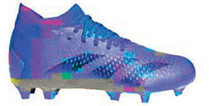
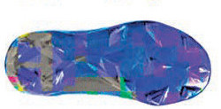
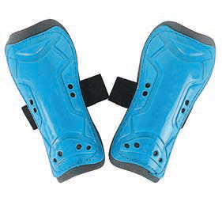
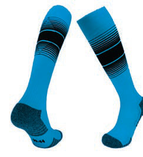
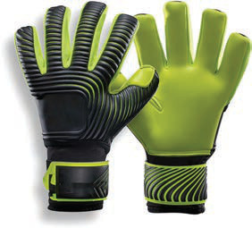
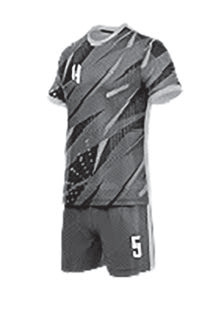

Vifaa
Ili kucheza mpira wa miguu kwa usahihi, vifaa vifuatavyo ni muhimu:






Kielelezo namba 1: Vifaa vya mchezo wa mpira wa miguu
Ili kucheza mpira wa miguu kwa usahihi, vifaa vifuatavyo ni muhimu:






Kielelezo namba 1: Vifaa vya mchezo wa mpira wa miguu